Ninad's passion for learning new skills and finding creative solutions stood out to me from day one. I hired him onto my design team as a student graphic designer in January of 2020. Though he was studying computer science, Ninad had demonstrated experience with graphic design.
As a member of my team, Ninad created print and digital assets. His engineering skills and creative problem solving also led him to create a tool that generated text for project and file folders based on our strict file naming conventions, as well as some scripting that greatly aided in file migration to a new digital asset management system.
I look forward to seeing his future accomplishments — he has a bright future ahead.
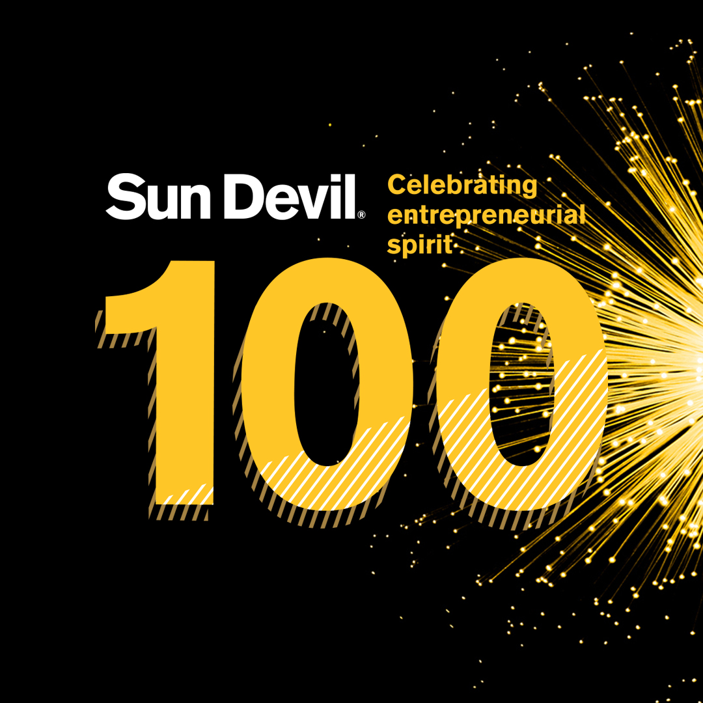
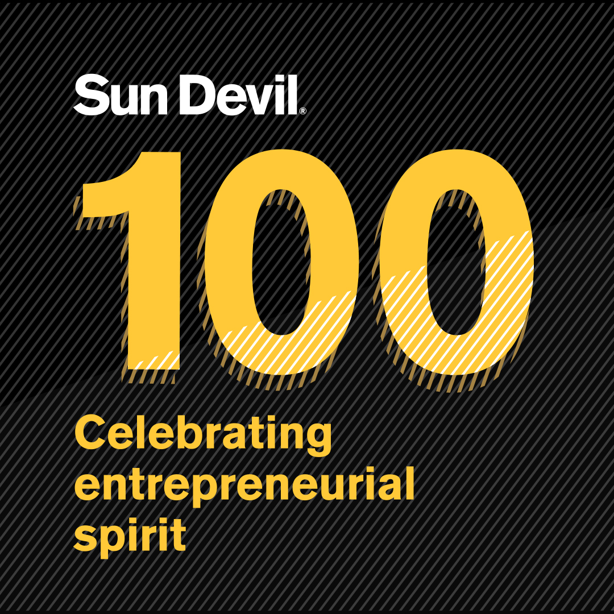
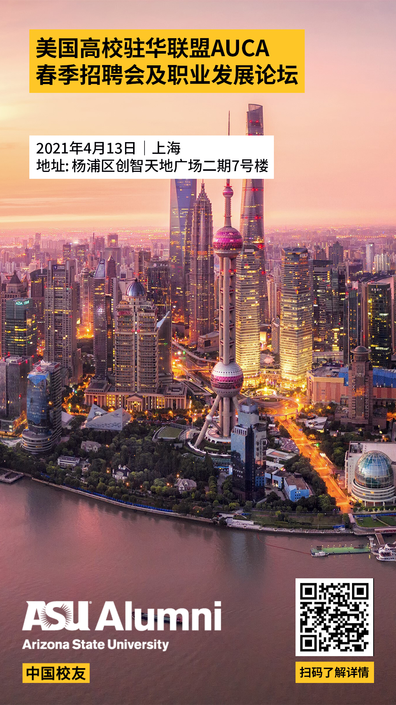
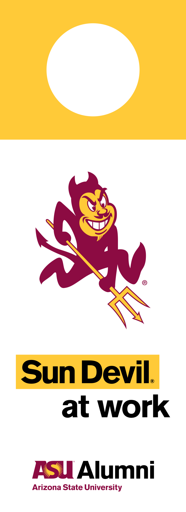
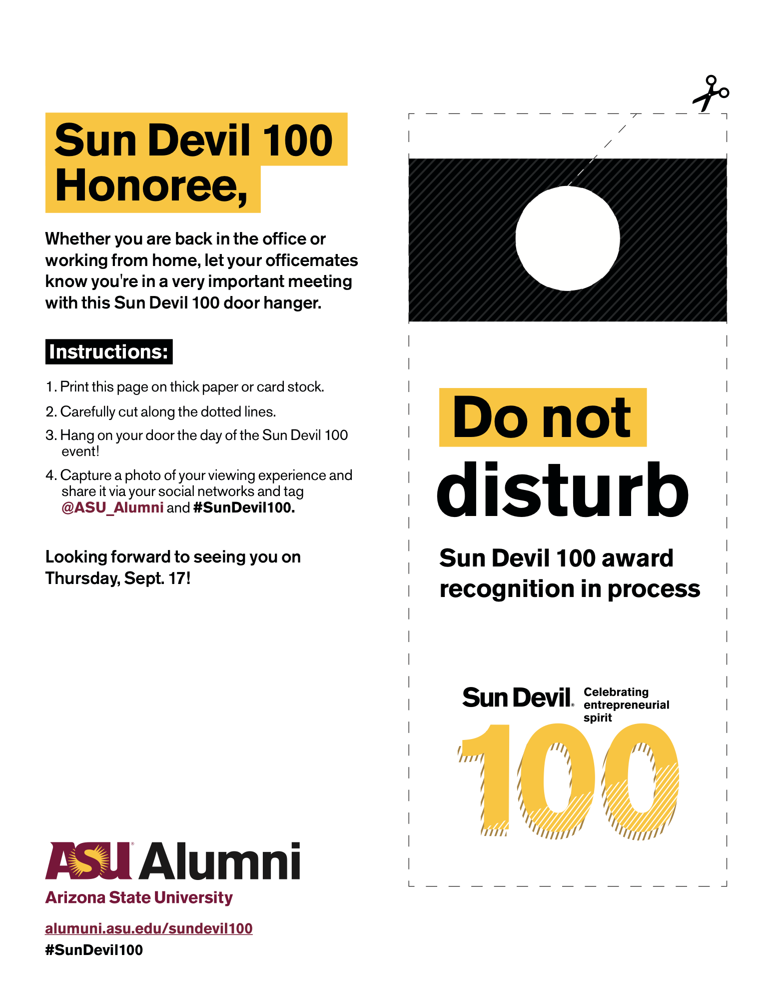
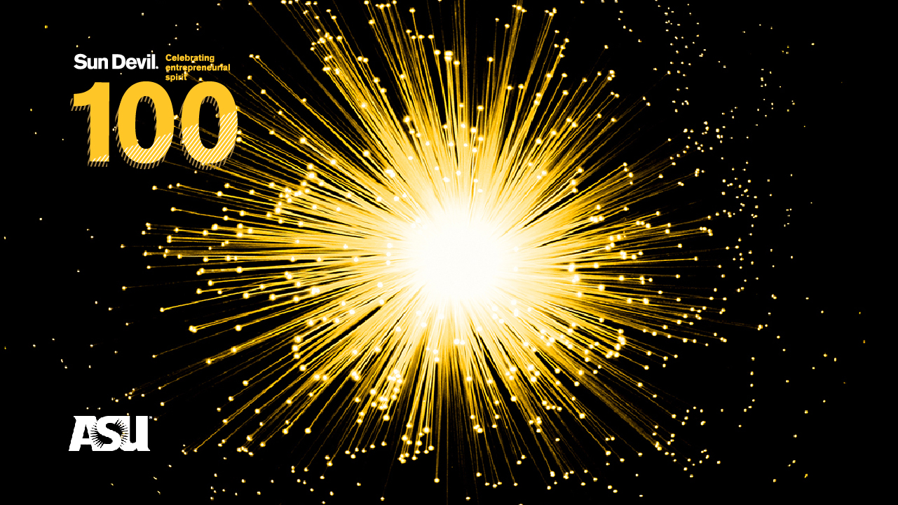
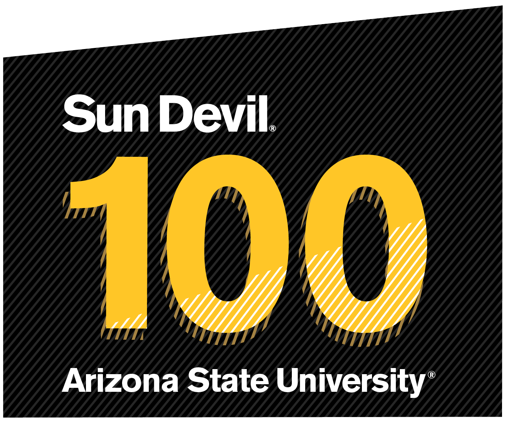
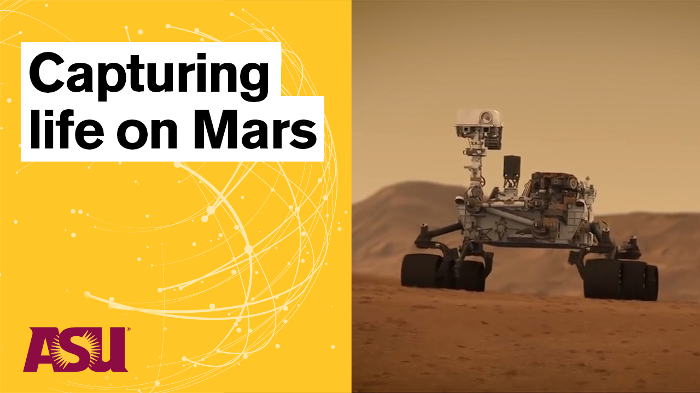
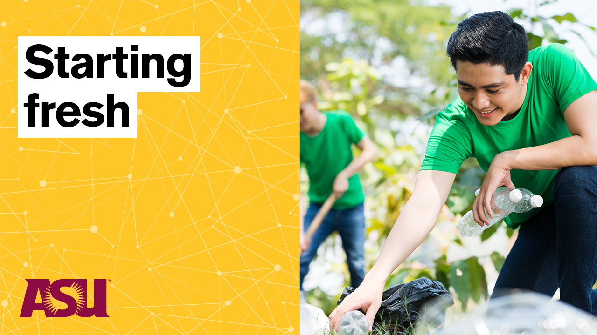
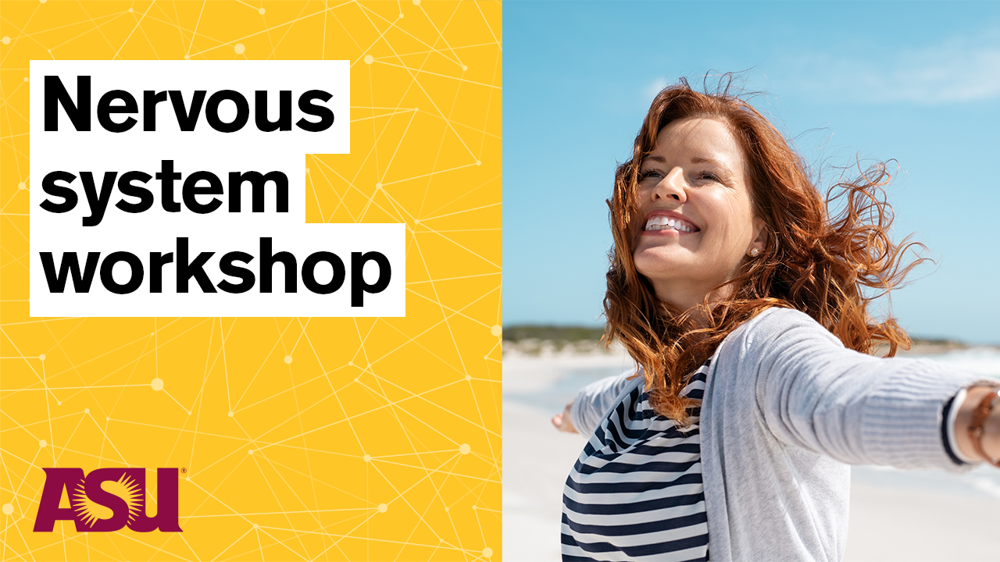
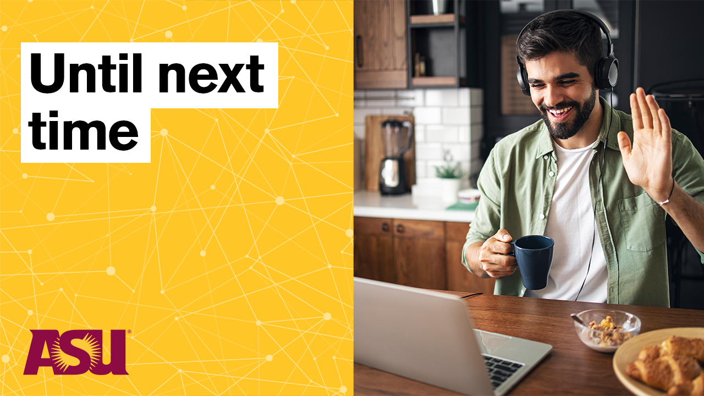